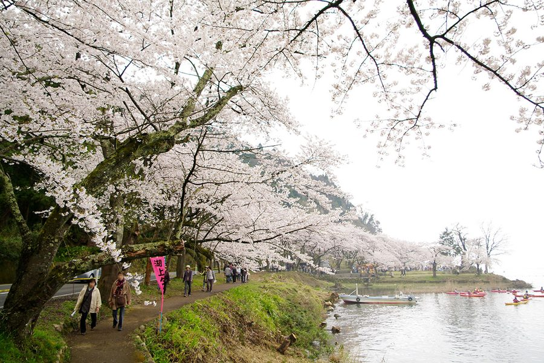
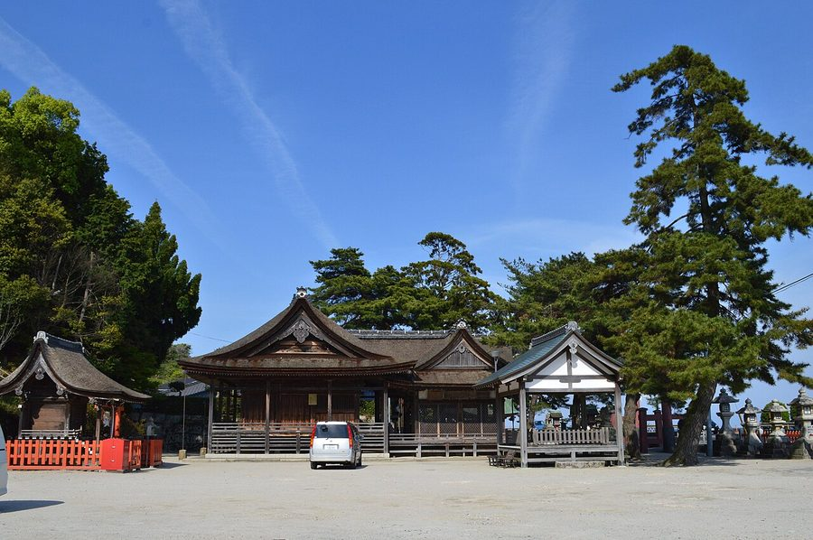
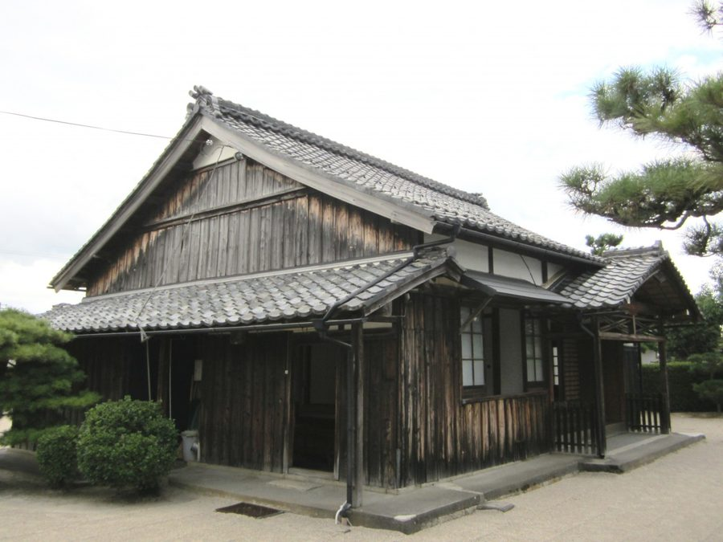
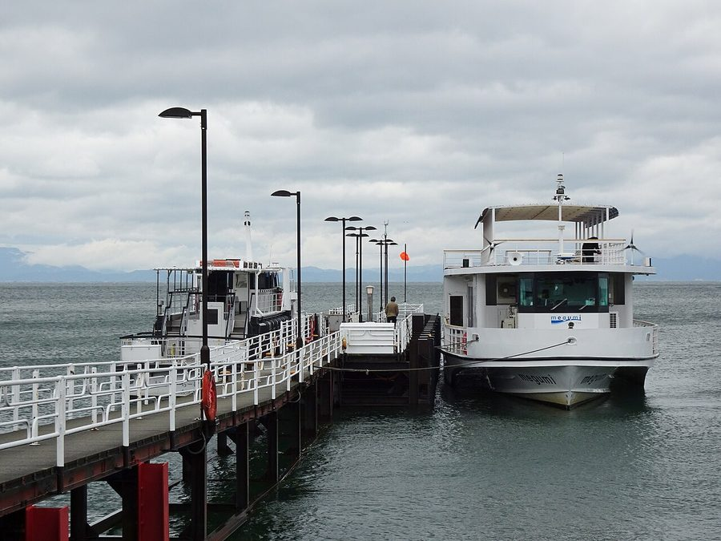

滋賀県高島市の道の駅（4件）
寄り道スポット検索アプリ「ヨッテコ」の収録データから、滋賀県高島市の道の駅を営業時間・料金つきで一覧にしました（2026年8月時点）。
滋賀県高島市はどんなまち？
数字で見る🔍滋賀県高島市
まちの横顔




- 地形と気候: 高島市は滋賀県北西部に位置し、面積は693.05平方キロメートルで、琵琶湖の面積669.26平方キロメートルを上回る県内最大の面積を持ちます。安曇川と石田川流域には扇状地や三角州の平地が広がるほかは、比良山地や野坂山地などの森林が占めています。日本海側気候で、旧今津町・旧マキノ町・旧朽木村は豪雪地帯対策特別措置法における豪雪地帯に指定されており、スキー場もあります。
- 観光: マキノ町海津大崎は日本さくら名所100選に選ばれており、花見シーズンには10万人を超える観光客が訪れます。マキノ町にはカタクリの花の群生地、今津町にはザゼン草の群生地があり、新旭町針江区には川端（かばた）と呼ばれる湧き水の利用施設もあります。萩の浜は日本の渚百選、八ッ淵の滝は日本の滝百選、畑の棚田は日本の棚田百選に選ばれています。
- 特産と文化: 安曇川沿いでは扇の骨部分にあたる扇骨の生産が行われています。琵琶湖を舟でめぐる際に歌われた『琵琶湖周航の歌』は、この地が発祥とされています。
寄り道充実度（全国偏差値）
偏差値・順位は、ヨッテコ収録データ（2026年8月時点・26,033件）を市区町村別に集計した施設数の全国分布（1,728市区町村）から毎回算出しています。カードを押すとカテゴリ別の分析に切り替わります。
道の駅から見た滋賀県高島市
市内の道の駅は4駅、全国14位タイ（上位0.8%）。——道の駅の多さは、平均をはっきり超えている。
道の駅が多い市区町村 全国トップ5
| 順位 | 市区町村 | 道の駅 |
|---|---|---|
| 1位 | 岐阜県郡上市 | 8駅 |
| 1位 | 岐阜県高山市 | 8駅 |
| 3位 | 千葉県南房総市 | 7駅 |
| 3位 | 和歌山県田辺市 | 7駅 |
| 3位 | 山口県萩市 | 7駅 |
| 14位タイ | 滋賀県高島市 | 4駅 |
- 市内にあるのは くつき新本陣・しんあさひ風車村・マキノ追坂峠・藤樹の里あどがわ。
- 全国の市区町村は平均0.70駅。市内にはその5.7倍にあたる4駅があります。比良山地や野坂山地の森林と安曇川・石田川流域の平地を併せ持つ、県内最大の面積を持つ市。市域の広さと幹線の通り方が、そのまま駅の数になって出ています。
出典: 施設データ=ヨッテコ収録データ（26,033件・2026年8月時点）。偏差値・全国順位・全国水準は全1,728市区町村の分布から毎回算出。 / 人口=総務省「住民基本台帳に基づく人口、人口動態及び世帯数」（2026年1月1日現在） / 面積=国土地理院「全国都道府県市区町村別面積調」（2026年4月1日時点） / 森林率=農林水産省「2025年農林業センサス（農山村地域調査）」市区町村別林野率（2025年、林野率（林野面積÷総土地面積）） / 年平均気温=気象庁「平年値（1991-2020年）」。市区町村の代表点（国土交通省「大字・町丁目レベル位置参照情報」）から最も近い観測点の値 / まちの解説=日本語版Wikipedia「高島市」（https://ja.wikipedia.org/wiki/高島市、2026年8月21日取得、CC BY-SA 4.0） / 写真=Wikimedia Commons（各キャプションに作者・ライセンスを記載）
曜日別の営業施設数
| 月 | 火 | 水 | 木 | 金 | 土 | 日 |
|---|---|---|---|---|---|---|
| 4 | 2 | 4 | 4 | 4 | 4 | 4 |
火曜日が最も休みが多く（各2件が定休）、年中無休は2件です。※営業時間データのある4件で集計
施設一覧
| 施設 | 営業時間 |
|---|---|
| くつき新本陣 | 09:00〜17:00（火休） |
| しんあさひ風車村 | 09:00〜18:00 |
| マキノ追坂峠 | 09:00〜18:00（火休） |
| 藤樹の里あどがわ | 09:00〜18:00 |